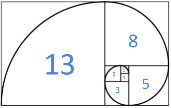

La successió de Fibonacci comença amb els nombres 0 i 1, i a partir d'aquests, «cada terme és la suma dels dos anteriors».

A partir de vàries sequències de nombres, determina si són successions de Fibonacci.
Input Format
El primer nombre indica la quantitat de seqüències que venen després.
Cada sequència de N nombres acaba amb un -1.
Constraints
Cada seqüència té almenys 2 números.
Output Format
Un "SI" o un "NO" per cada seqüència; separats per un salt de línia.
Sample Input 0
2
1 1 2 3 -1
0 1 1 -1
Sample Output 0
NO
SI
Sample Input 1
2
0 1 1 2 3 5 -1
0 1 1 5 -1
Sample Output 1
SI
NO
Sample Input 2
2
1 1 2 3 5 -1
0 1 -1
Sample Output 2
NO
SI
Sample Input 3
4
0 0 1 1 2 3 5 -1
0 1 2 3 5 8 -1
0 1 1 2 3 5 13 -1
0 1 1 2 3 5 8 13 21 34 55 -1
Sample Output 3
NO
NO
NO
SI